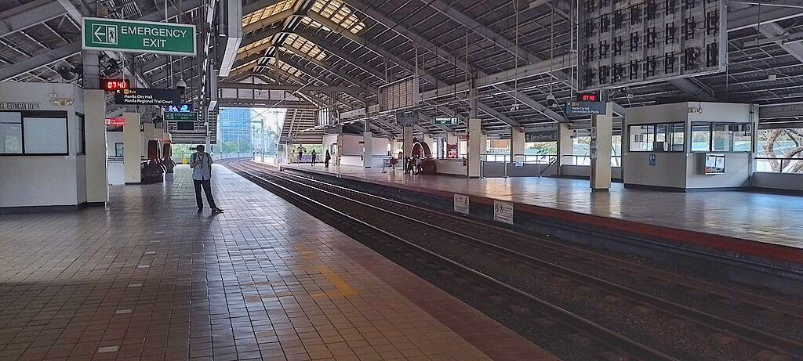

Central Terminal
LRT-1 station
Central Station (sometimes called Arroceros station or Lawton station) is an elevated Manila Light Rail Transit (LRT) station situated on Line 1. It is located in Ermita, Manila. A popular name for the station is Arroceros due to its proximity to the Arroceros Forest Park.
Central Terminal is the last station of LRT Line 1 south of the Pasig River and serves as the ninth station for trains headed to Fernando Poe Jr. and the twelfth station for trains headed to Baclaran. It is also near some of Manila's major landmarks, such as the Mehan Gardens and the Manila Metropolitan Theater. It is also near the Manila City Hall, Liwasang Bonifacio, Manila Central Post Office, Manila Hall of Justice, Bonifacio Shrine, and the National Museum of Fine Arts. SM City Manila is also a nearby shopping center.
Due to its location in Manila's University Belt, the station is near educational institutions such as the Colegio de San Juan de Letran, the Philippine Normal University, the city-owned Pamantasan ng Lungsod ng Maynila, the Mapúa University, and the Lyceum of the Philippines University. All those institutions, except the Philippine Normal University, lie within the former Spanish walled city of Intramuros.
Central Terminal is one of the four stations and terminals in the whole LRT-1 system that allows commuters to catch a train going in the opposite direction without paying a new fare due to the station's layout. The other three stops are Carriedo, Balintawak, and Fernando Poe Jr.
| Central Terminal | |||||||
|---|---|---|---|---|---|---|---|
|  | |||||||
| General information | |||||||
| Location | Antonio Villegas Street, Ermita, Manila, Metro Manila, Philippines | ||||||
| Owned by | Department of Transportation Light Rail Transit Authority |
||||||
| Operated by | Light Rail Manila Corporation | ||||||
| Line(s) | Line 1 | ||||||
| Platforms | 2 (2 side) | ||||||
| Tracks | 2 | ||||||
| Connections |
Lawton Park N' Ride
Manila Multimodal Terminal Lawton Ferry Station |
||||||
| Construction | |||||||
| Structure type | Viaduct | ||||||
| Parking | Yes (Lawton Park N' Ride, UDM, Bonifacio Shrine, SM City Manila) | ||||||
| Bicycle facilities | Bicycle racks | ||||||
| Other information | |||||||
| Station code | CT | ||||||
| History | |||||||
| Opened | May 12, 1984 | ||||||
| Services | |||||||
|
|||||||
Central Terminal is the last station of LRT Line 1 south of the Pasig River and serves as the ninth station for trains headed to Fernando Poe Jr. and the twelfth station for trains headed to Baclaran. It is also near some of Manila's major landmarks, such as the Mehan Gardens and the Manila Metropolitan Theater. It is also near the Manila City Hall, Liwasang Bonifacio, Manila Central Post Office, Manila Hall of Justice, Bonifacio Shrine, and the National Museum of Fine Arts. SM City Manila is also a nearby shopping center.
Due to its location in Manila's University Belt, the station is near educational institutions such as the Colegio de San Juan de Letran, the Philippine Normal University, the city-owned Pamantasan ng Lungsod ng Maynila, the Mapúa University, and the Lyceum of the Philippines University. All those institutions, except the Philippine Normal University, lie within the former Spanish walled city of Intramuros.
Central Terminal is one of the four stations and terminals in the whole LRT-1 system that allows commuters to catch a train going in the opposite direction without paying a new fare due to the station's layout. The other three stops are Carriedo, Balintawak, and Fernando Poe Jr.
Owing to its name, Central Terminal is a major transportation hub for LRT-1 commuters. Next to the station is the Lawton bus terminal, also known as Lawton Park N' Ride, which is served by intercity and intracity buses, jeepneys, and UV Express vehicles. The Manila Multimodal Terminal by the Pasig River is also located near the station. Taxis also serve the vicinity of the station and of the bus terminal. The Lawton station of the Pasig River Ferry Service is also located nearby.
Street level
Central Terminal has a unique layout as the only station on the line with separate street-level exits that bypass the station concourse, which are located on all of its four corners. Access to the station concourse is provided by two large staircases, in which only one is normally in use. Each of the four corner exits on the street level have one-way revolving doors to prevent counterflow entry through these exits.The street level of the station has multiple shops, stalls, and some street vendors.
Station concourse
The concourse of the station is much wider than most stations on the LRT-1 mainline, allowing space for more ticket offices and fare gates. Some of the operations offices are also located at the concourse, as well as a restroom.Platform level
Each platform of the station has two entrances and two exits. The middle-north and middle-south staircases of each platform provides direct exit access to the street level, while the north staircases on each platform serve as both the entrance and exit of each platform to the station concourse. The south staircases on both platforms are currently not in use. A clinic is located on the south end of the northbound platform.Nearby buildings
The northern and middle exits provide access to the Arroceros Forest Park, Lawton Park 'N Ride, Lawton Bus Terminal, the Manila Metropolitan Theater, and the Mehan Gardens. Commuters going to Intramuros and the Port Area are usually advised to take the Lawton underpass at the Lawton Bus Terminal.The middle exit provides access to the Metropolitan Trial Court, Maynilad Water Services, Civil Service Commission, Manila Youth Reception Center.
The southern exits provide access to the Manila City Hall, Universidad de Manila, Office of the Ombudsman, Bonifacio Park, Philippine Normal University, Adamson University, National Museum of the Philippines, and SM City Manila.
- On March 22, 2016, the doors of a 1st generation train car at the Central Terminal station failed to open, leaving passengers trapped inside the train.
| Existing stations | |
|---|---|
|
Baclaran
EDSA Libertad Gil Puyat Vito Cruz Quirino Pedro Gil United Nations Central Carriedo |
Doroteo Jose
Bambang Tayuman Blumentritt Abad Santos R. Papa 5th Avenue Monumento Balintawak Fernando Poe Jr. |
| Under construction | |
|
Redemptorist
MIA Asia World Ninoy Aquino |
Dr. Santos
Las Piñas Zapote Niog |
| North Triangle | |